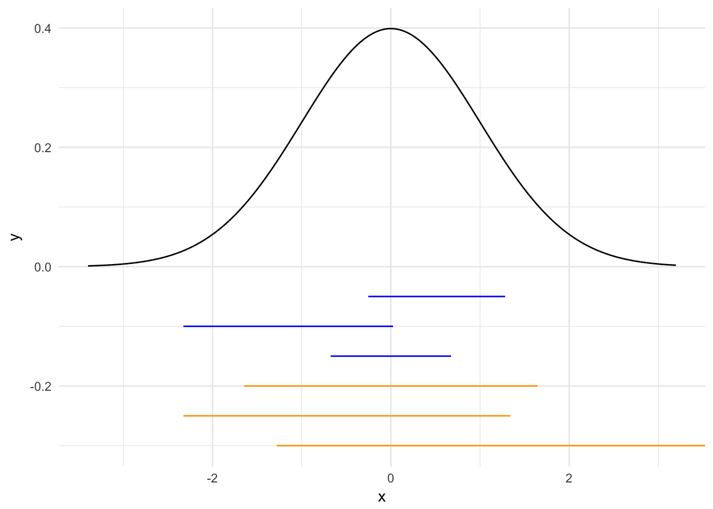

library(tidyverse)
library(broom)
library(forcats)
library(modelr)
library(stringr)
library(car)
library(rcfss)
library(coefplot)
library(RColorBrewer)
library(lme4)
options(digits = 3)
set.seed(1234)
theme_set(theme_minimal())Bayes’ theorem is a fundamental component of both probability and statistics and is central to understanding the differences between frequentist and Bayesian inference. For two events \(A\) and \(B\), Bayes’ theorem states that:
\[P(B|A) = \frac{P(A|B) \cdot P(B)}{P(A)}\]
Bayes’ rule tells us how to invert conditional probabilities. That is, to find \(P(B|A)\) from \(P(A|B)\). Let’s walk through this with a few examples.
Toss a coin 5 times. Let \(H_1 =\) “first toss is heads” and let \(H_A =\) “all 5 tosses are heads”. Therefore \(P(H_1 | H_A) = 1\) (if all five tosses are heads, then the first one must by definition also be heads) and \(P(H_A | H_1) = \frac{1}{16}\) (\(\frac{1}{2^4} = \frac{1}{16}\)).
However we can also use Bayes’ theorem to calculate \(P(H_1 | H_A)\) using \(P(H_A | H_1)\). The terms we need are:
So,
\[P(H_A | H_1) = \frac{P(H_A | H_1) \cdot P(H_1)}{P(H_A)} = \frac{\frac{1}{16} \cdot \frac{1}{2}}{\frac{1}{32}} = 1\]
If an aircraft is present in a certain area, a radar correctly registers its presence with probability \(0.99\). If it is not present, the radar falsely registers an aircraft presence with probability \(0.10\). We assume that an aircraft is present with probability \(0.05\). What is the probability that an airplane is present and the radar correctly detects it?
\[ \begin{align} P(\text{aircraft present} | \text{radar registers}) &= P(A|B) \\ & = \frac{P(A) \cdot P(B|A)}{P(B)} \\ & = \frac{P(A) \cdot P(B|A)}{P(A) \cdot P(B|A) + P(A = 0) \cdot(B | A = 0)} \\ & = \frac{0.05 \cdot 0.99}{0.05 \cdot 0.99 + 0.95 \cdot 0.1} \\ & \approx 0.3426 \end{align} \]
Notice that we never were given the \(P(A|B)\) (probability an airplane is present and the radar detects it), but we could calculate it based on the \(P(B|A)\) (probability the radar detects something and an airplane is present). Also note that \(P(A|B) \neq P(B|A)\).
A test for a certain rare disease is assumed to be correct 95% of the time:
A random person drawn from a certain population has probability 0.001 of having the disease. Given that the person just tested positive, what is the probability of having the disease?
\[ \begin{align} P(\text{person has the disease} | \text{test is positive}) &= P(A|B) \\ & = \frac{P(A) \cdot P(B|A)}{P(B)} \\ & = \frac{P(A) \cdot P(B|A)}{P(A) \cdot P(B|A) + P(A = 0) \cdot(B | A = 0)} \\ & = \frac{0.001 \cdot 0.95}{0.001 \cdot 0.95 + 0.999 \cdot 0.05} \\ & = 0.0187 \end{align} \]
Even though the test is fairly accurate, a person who has tested positive is still very unlikely (less than 2%) to have the disease. Because the base rate of the disease in the population is so low, the vast majority of people taking the test are healthy and even with an accurate test most of the positives will be healthy people.1
Much of the statistics we conduct is inferential statistics - we want to draw inferences about the world given empirical data. Generally we specify a statistical model for the process by which the data arises and estimate the parameters for the model. We rarely make definitive statements about such parameters because of error and random noise generated by the data generating process, so we want to couch our findings in probabilistic statements.
In scientific experiments, we start with a hypothesis and collect data to test the hypothesis. We will often let \(H\) represent the event “our hypothesis is true” and let \(D\) be the collected data. In other words, according to Bayes’ theorem:
\[P(\text{hypothesis is true}| \text{data}) = \frac{P(\text{data} | \text{hypothesis is true}) \cdot P(\text{hypothesis is true})}{P(\text{data})}\]
The left-hand term is the probability our hypothesis is true given the data we collected. This is what we want to know, if we can identify all the components on the right-hand side. But rarely do we have all those values. We can still work around this as we’ll see shortly.
Recall that under Bayes’ theorem:
\[ \begin{align} P(\text{person has the disease} | \text{test is positive}) &= P(A|B) \\ & = \frac{P(A) \cdot P(B|A)}{P(B)} \\ & = \frac{P(A) \cdot P(B|A)}{P(A) \cdot P(B|A) + P(A = 0) \cdot(B | A = 0)} \\ & = \frac{0.001 \cdot 0.95}{0.001 \cdot 0.95 + 0.999 \cdot 0.05} \\ & = 0.0187 \end{align} \]
Before the test, we would have said the probability the person had the disease was 0.001. After the test, we see the probability is 0.0187, or 18 times more likely than before the test. That is, the positive test provides some evidence that the person has the disease (even if it isn’t good evidence).
Now let’s look at a coin tossing problem. There are three types of coins with different probabilities of landing heads when tossed.
Suppose I have a drawer containing 5 coins: 2 of type \(A\), 2 of type \(B\), and 1 of type \(C\). I reach into the drawer and pick a coin at random. Without showing you the coin I flip it once and get heads. What is the probability it is type \(A\)? Type \(B\)? Type \(C\)?
Let \(A\), \(B\), and \(C\) be the event the chosen coin was of the respective type. Let \(D\) be the event that the toss is heads. The problem then asks us to find:
\[P(A|D), P(B|D), P(C|D)\]
Before applying Bayes’ theorem, we need to define a few things:
Prior probability - the probability of each hypothesis prior to tossing the coin (collecting data). Since the drawer has 2 coins of type \(A\), 2 of type \(B\), and 1 of type \(C\), we have:
\[P(A) = 0.4, P(B) = 0.4, P(C) = 0.2\]
Likelihood - the likelihood function (same as used for maximum-likelihood estimation). The likelihood function is \(P(D|H)\), the probability of the data assuming that the hypothesis is true. Most often we will consider the data as fixed and let the hypothesis vary. For example, \(P(D|A) =\) probability of heads if the coin is type \(A\). In our case, the likelihoods are:
\[P(D|A) = 0.5, P(D|B) = 0.6, P(D|C) = 0.9\]
We can think of these as parameters for a series of Bernoulli distributions.
Posterior probability - the probability (posterior to) of each hypothesis given the data from tossing the coin:
\[P(A|D), P(B|D), P(C|D)\]
These posterior probabilities are what we want to find.
We can now use Bayes’ theorem to compute each of the posterior probabilities. The theorem says:
\[P(A|D) = \frac{P(D|A) \cdot P(A)}{P(D)}\] \[P(B|D) = \frac{P(D|B) \cdot P(B)}{P(D)}\] \[P(C|D) = \frac{P(D|C) \cdot P(C)}{P(D)}\]
\(P(D)\) can be computed using the law of total probability:
\[ \begin{align} P(D) & = P(D|A) \cdot P(A) + P(D|B) \cdot P(B) + P(D|C) \cdot P(C) \\ & = 0.5 \cdot 0.4 + 0.6 \cdot 0.4 + 0.9 \cdot 0.2 = 0.62 \end{align} \]
So each of the posterior probabilities are:
\[P(A|D) = \frac{P(D|A) \cdot P(A)}{P(D)} = \frac{0.5 \cdot 0.4}{0.62} = \frac{0.2}{0.62}\]
\[P(B|D) = \frac{P(D|B) \cdot P(B)}{P(D)} = \frac{0.6 \cdot 0.4}{0.62} = \frac{0.24}{0.62}\]
\[P(C|D) = \frac{P(D|C) \cdot P(C)}{P(D)} = \frac{0.9 \cdot 0.2}{0.62} = \frac{0.18}{0.62}\]
Notice that the total probability \(P(D)\) is the same in each of the denominators and is the sum of the three numerators.
| hypothesis | prior | likelihood | Bayes numerator | posterior |
|---|---|---|---|---|
| \(H\) | \(P(H)\) | \(P(D\mid H)\) | \(P(D \mid H) \cdot P(H)\) | \(P(H \mid D)\) |
| A | 0.4 | 0.5 | 0.2 | 0.3226 |
| B | 0.4 | 0.6 | 0.24 | 0.3871 |
| C | 0.2 | 0.9 | 0.18 | 0.2903 |
| total | 1 | 0.62 | 1 |
The Bayes numerator is the product of the prior and the likelihood. The posterior probability is obtained by dividing the Bayes numerator by \(P(D) = 0.625\).
The process of going from the prior probability \(P(H)\) to the posterior \(P(H|D)\) is called Bayesian updating. Bayesian updating uses the data to alter our understanding of the probability of each hypothesis.
Therefore we can express Bayes’ theorem as:
\[P(\text{hypothesis}| \text{data}) = \frac{P(\text{data} | \text{hypothesis}) \cdot P(\text{hypothesis})}{P(\text{data})}\]
\[P(H|D) = \frac{P(D | H) \cdot P(H)}{P(D)}\]
With the data fixed, the denominator \(P(D)\) just serves to normalize the total posterior probability to 1. So we could express Bayes’ theorem as a statement about the proportionality of two functions of \(H\):
\[P(\text{hypothesis}| \text{data}) \propto P(\text{data} | \text{hypothesis}) \cdot P(\text{hypothesis})\] \[\text{posterior} \propto \text{likelhood} \cdot \text{prior}\]
In more general terms, we use random variables and probability mass/density functions:
In life we continually update our beliefs with each new experience of the world. In Bayesian inference, today’s posterior is tomorrow’s prior.
Consider the September 11th attacks in New York City. Say that before the first plane hit, our estimate of the probability of a terror attack on tall buildings in Manhattan was just 1 in 20,000, or 0.005 percent. But we also assign a low probability to a plane hitting the World Trade Center by accident: 1 in 12,500 on any given day.2 Consider the use of Bayes’ theorem in this instance. What is the probability of terrorists crashing planes into Manhattan skyscrapers given the first plane hitting the World Trade Center?
Our posterior probability of a terror attack, given the first plane hitting the world trade center, is:
\[ \begin{align} P(A|B) &= \frac{P(B|A) \cdot P(A)}{P(B)} \\ &= \frac{P(B|A) \cdot P(A)}{P(B|A) \cdot P(A) + P(B| A = 0) \cdot P(A=0)} \\ & = \frac{0.005 \cdot 1}{0.005 \cdot 1 + 0.008 \cdot 0.995} \\ & \approx 0.38 \end{align} \]
We would now estimate a posterior probability of a 38% chance of a terrorist attack on the World Trade Center. But we can continuously update this posterior probability as new data presents itself.
\[ \begin{align} P(A|B) &= \frac{P(B|A) \cdot P(A)}{P(B)} \\ &= \frac{P(B|A) \cdot P(A)}{P(B|A) \cdot P(A) + P(B| A = 0) \cdot P(A=0)} \\ & = \frac{0.38 \cdot 1}{0.38 \cdot 1 + 0.38 \cdot 0.995} \\ & \approx .9999 \end{align} \]
Bayesian inference requires a known prior. What happens if the prior is not known with certainty? Then we need to come up with one. A common approach uses a uniform prior, or a flat probability distribution.3 Other priors come from different distributions, such as Gamma or Beta distributions, or use previous posterior probability distributions as prior probability distributions in updating Bayesian models.
\[P(\text{hypothesis}| \text{data}) = \frac{P(\text{data} | \text{hypothesis}) \cdot P(\text{hypothesis})}{P(\text{data})}\]
\[\text{posterior} \propto \text{likelhood} \cdot \text{prior}\]
If we choose a different prior, we will not obtain the same posterior probabilities. This is one of the major critiques of Bayesian inference, since selection of the prior is based on domain knowledge (and potentially previously obtained posterior probabilities).
Suppose we have a probability mass function \(P(\theta)\) or probability density function \(f(\theta)\) describing our belief about the value of an unknown parameter of interest \(\theta\). A \(p\)-probability interval for \(\theta\) is an interval \([a,b]\) with \(P(a \leq \theta \leq b) = p\).
Probability intervals are also known as credible intervals. These are not the same thing as confidence intervals.
There are many probability intervals for a given pdf. Different \(p\)-probability intervals for \(\theta\) may have different widths, depending on where we center the interval.
sim_data <- data_frame(x = rnorm(1000, 0, 1))
xmin_start <- c(.25, .01, .4)
sim_50p <- data_frame(xmin = qnorm(xmin_start),
xmax = qnorm(xmin_start + .5),
y = c(-.075, -.05, -.025))
xmin_start <- c(.1, .01, .05)
sim_90p <- data_frame(xmin = qnorm(xmin_start),
xmax = qnorm(xmin_start + .9),
y = c(-.15, -.125, -.1))
ggplot(sim_data, aes(x)) +
stat_function(fun = dnorm, n = 10000, args = list(mean = 0, sd = 1)) +
geom_segment(data = sim_50p, aes(x = xmin, xend = xmax, y = y, yend = y),
color = "blue") +
geom_segment(data = sim_90p, aes(x = xmin, xend = xmax, y = y, yend = y),
color = "orange")
The blue bars span .5-probability intervals. Each bar contains 50% of the probability mass in the pdf. The lengths differ because they are centered over different percentiles (e.g. \([.25, .75]\), \([.01, .51]\), \([.4, .9]\)). Likewise for the .9-probability bars in orange. The shortest bars are symmetric and centered over the most likely value (e.g. the mean).
Probability intervals are an intuitive and effective way to summarize and communicate your beliefs. Likely you don’t want to describe an entire function \(f(\theta)\) in words. Think about it:
I think \(\theta\) is between 0.45 and 0.65 with 50% probability.
I think \(\theta\) follows a \(\text{Beta}(8, 6)\) distribution.
Compare this Bayesian approach to the more familiar frequentist school of inference. Both of them are based on probability and Bayes’ theorem:
\[P(H|D) = \frac{P(D | H) \cdot P(H)}{P(D)}\]
When the prior is known, both Bayesians and frequentists use Bayes’ rule. However, when the prior is not known Bayesians develop one based on the best available information. Frequentists instead abandon Bayes’ theorem and conduct inference just based on the likelihood function:
\[L(H; D) = P(D|H)\]
The core reasons for this deviation is the meaning of probability. Frequentists believe that probabilities represent long-term frequencies of repeatable random experiments. So if “a coin has probability 0.5 of heads”, a frequentist believes this means the relative frequency of heads goes to 0.5 as the number of flips approaches infinity. This means the frequentist finds it nonsensical to specify a probability distribution for a parameter \(\theta\) with a fixed value.
In short, Bayesians put probability distributions on both hypotheses and data, while frequentists put probability distributions on (random, repeatable, experimental) data given a hypothesis.4
This explains the null hypothesis test. The presumption is that some hypothesis (parameter specifying the conditional distribution of the data) is true and that the observed data is sampled from that distribution. Therefore, under the null hypothesis we assume the parameter(s) is zero. If that is true, what is the probability of observing the given data? It does not depend on a subjective prior that could vary from researcher to researcher. This is where we get all of the things like:
You run a two-sample \(t\)-test for equal means, with \(\alpha = 0.05\) and obtain a p-value of 0.04. What are the odds that the two samples are drawn from distributions with the same mean?
Wrong! The answer is we don’t know. Frequentist methods only give probabilities of statistics conditioned on hypotheses:
With a p-value of less than 0.05, we reject the null hypothesis that the difference in means between the two samples is zero.
They do not give probabilities of hypotheses:
There is a 95% probability that the difference in means between the two samples falls between \([-.02, .03]\).
In more simplistic models based on well-known distributions such as the normal, gamma, beta, Poisson, etc., prior and posterior distributions can be computed analytically in closed form. That is, all the algebra and calculus can be solved by hand (or with minimal computational assistance). However in models with multiple parameters and multivariate probability distributions, the algebra becomes overwhelming. Instead, we can use computational methods such as Markov chain Monte Carlo (MCMC) and Gibbs sampling to integrate over the likelihood function or simulate draws from the distribution in question.
This is a major reason Bayesian inference is not more common in academia. These computational methods are far beyond the scope of a single lecture on Bayesian inference. Furthermore, computers were not powerful enough until the 1990s/2000s to actually solve the computational tasks necessary to conduct sophisticated Bayesian inference.
devtools::session_info()## setting value
## version R version 3.3.3 (2017-03-06)
## system x86_64, darwin13.4.0
## ui X11
## language (EN)
## collate en_US.UTF-8
## tz America/Chicago
## date 2017-05-22
##
## package * version date
## assertthat 0.2.0 2017-04-11
## backports 1.0.5 2017-01-18
## base * 3.3.3 2017-03-07
## broom * 0.4.2 2017-02-13
## car * 2.1-4 2016-12-02
## cellranger 1.1.0 2016-07-27
## coefplot * 1.2.4.9000 2017-04-25
## colorspace 1.3-2 2016-12-14
## datasets * 3.3.3 2017-03-07
## DBI 0.6-1 2017-04-01
## devtools 1.13.0 2017-05-08
## digest 0.6.12 2017-01-27
## dplyr * 0.5.0 2016-06-24
## evaluate 0.10 2016-10-11
## forcats * 0.2.0 2017-01-23
## foreign 0.8-68 2017-04-24
## ggplot2 * 2.2.1.9000 2017-05-12
## graphics * 3.3.3 2017-03-07
## grDevices * 3.3.3 2017-03-07
## grid 3.3.3 2017-03-07
## gtable 0.2.0 2016-02-26
## haven 1.0.0 2016-09-23
## hms 0.3 2016-11-22
## htmltools 0.3.6 2017-04-28
## httr 1.2.1 2016-07-03
## jsonlite 1.4 2017-04-08
## knitr 1.15.1 2016-11-22
## lattice 0.20-35 2017-03-25
## lazyeval 0.2.0 2016-06-12
## lme4 * 1.1-13 2017-04-19
## lubridate 1.6.0 2016-09-13
## magrittr 1.5 2014-11-22
## MASS 7.3-47 2017-04-21
## Matrix * 1.2-10 2017-04-28
## MatrixModels 0.4-1 2015-08-22
## memoise 1.1.0 2017-04-21
## methods * 3.3.3 2017-03-07
## mgcv 1.8-17 2017-02-08
## minqa 1.2.4 2014-10-09
## mnormt 1.5-5 2016-10-15
## modelr * 0.1.0 2016-08-31
## munsell 0.4.3 2016-02-13
## nlme 3.1-131 2017-02-06
## nloptr 1.0.4 2014-08-04
## nnet 7.3-12 2016-02-02
## parallel 3.3.3 2017-03-07
## pbkrtest 0.4-7 2017-03-15
## plyr 1.8.4 2016-06-08
## psych 1.7.5 2017-05-03
## purrr * 0.2.2.2 2017-05-11
## quantreg 5.33 2017-04-18
## R6 2.2.1 2017-05-10
## rcfss * 0.1.4 2017-02-28
## RColorBrewer * 1.1-2 2014-12-07
## Rcpp 0.12.10 2017-03-19
## readr * 1.1.0 2017-03-22
## readxl 1.0.0 2017-04-18
## reshape2 1.4.2 2016-10-22
## rlang 0.1.9000 2017-05-12
## rmarkdown 1.5 2017-04-26
## rprojroot 1.2 2017-01-16
## rvest 0.3.2 2016-06-17
## scales 0.4.1 2016-11-09
## SparseM 1.77 2017-04-23
## splines 3.3.3 2017-03-07
## stats * 3.3.3 2017-03-07
## stringi 1.1.5 2017-04-07
## stringr * 1.2.0 2017-02-18
## tibble * 1.3.0.9002 2017-05-12
## tidyr * 0.6.2 2017-05-04
## tidyverse * 1.1.1 2017-01-27
## tools 3.3.3 2017-03-07
## useful 1.2.1 2016-06-29
## utils * 3.3.3 2017-03-07
## withr 1.0.2 2016-06-20
## xml2 1.1.1 2017-01-24
## yaml 2.1.14 2016-11-12
## source
## cran (@0.2.0)
## CRAN (R 3.3.2)
## local
## CRAN (R 3.3.2)
## CRAN (R 3.3.2)
## CRAN (R 3.3.0)
## Github (jaredlander/coefplot@0755a00)
## CRAN (R 3.3.2)
## local
## CRAN (R 3.3.2)
## CRAN (R 3.3.2)
## CRAN (R 3.3.2)
## CRAN (R 3.3.0)
## CRAN (R 3.3.0)
## CRAN (R 3.3.2)
## CRAN (R 3.3.2)
## Github (tidyverse/ggplot2@f4398b6)
## local
## local
## local
## CRAN (R 3.3.0)
## cran (@1.0.0)
## CRAN (R 3.3.2)
## cran (@0.3.6)
## CRAN (R 3.3.0)
## cran (@1.4)
## cran (@1.15.1)
## CRAN (R 3.3.2)
## CRAN (R 3.3.0)
## cran (@1.1-13)
## CRAN (R 3.3.0)
## CRAN (R 3.3.0)
## CRAN (R 3.3.2)
## CRAN (R 3.3.2)
## CRAN (R 3.3.0)
## CRAN (R 3.3.2)
## local
## CRAN (R 3.3.3)
## cran (@1.2.4)
## CRAN (R 3.3.0)
## CRAN (R 3.3.0)
## CRAN (R 3.3.0)
## CRAN (R 3.3.3)
## cran (@1.0.4)
## CRAN (R 3.3.3)
## local
## CRAN (R 3.3.2)
## CRAN (R 3.3.0)
## CRAN (R 3.3.3)
## CRAN (R 3.3.3)
## CRAN (R 3.3.2)
## CRAN (R 3.3.2)
## local
## CRAN (R 3.3.0)
## cran (@0.12.10)
## cran (@1.1.0)
## CRAN (R 3.3.2)
## CRAN (R 3.3.0)
## Github (hadley/rlang@c17568e)
## CRAN (R 3.3.2)
## CRAN (R 3.3.2)
## CRAN (R 3.3.0)
## CRAN (R 3.3.1)
## CRAN (R 3.3.2)
## local
## local
## CRAN (R 3.3.2)
## CRAN (R 3.3.2)
## Github (tidyverse/tibble@9103a30)
## CRAN (R 3.3.2)
## CRAN (R 3.3.2)
## local
## CRAN (R 3.3.0)
## local
## CRAN (R 3.3.0)
## CRAN (R 3.3.2)
## cran (@2.1.14)Even worse, many physicians substantially miss the correct answer to this question.↩
Based on historical records of just two accidents involving planes hitting buildings in New York City from the 1940s-9/10/2011.↩
Based on the uniform probability distribution.↩
And generally extend this to observational data that is not in practical terms repeatable, though in theory can be.↩
We hope.↩
This work is licensed under the CC BY-NC 4.0 Creative Commons License.